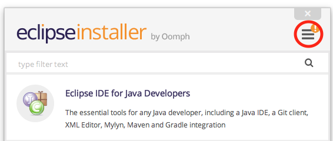
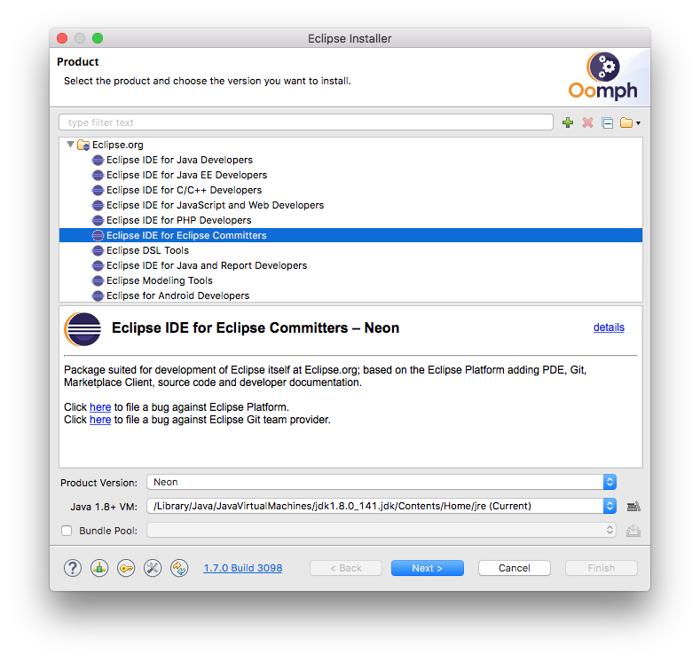
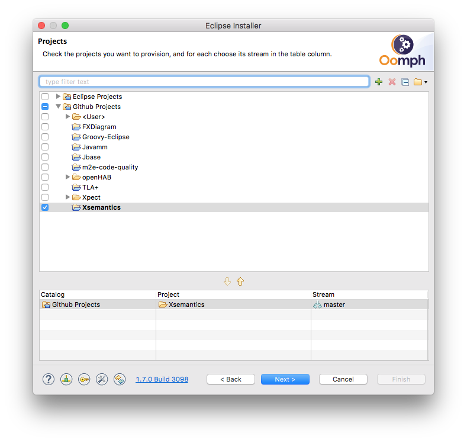

Official Eclipse downloads are expected to be released soon.
In the meantime, an unofficial release can be installed using the Eclipse Oomph Installer using the following steps:
Select Advanced Mode via the menu in the top right corner 
Select an Eclipse version to install

Select GitHub Projects Xsemantics and select Next
The Oomph installer will then guide you through the rest of the installation process.
